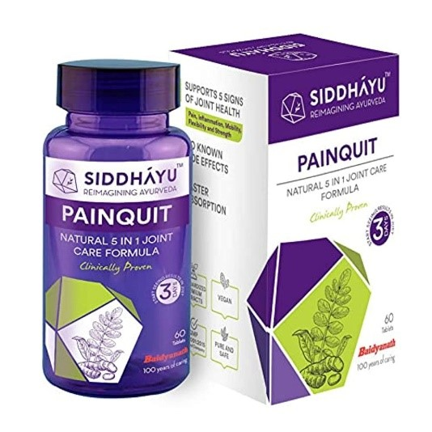
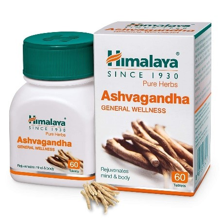
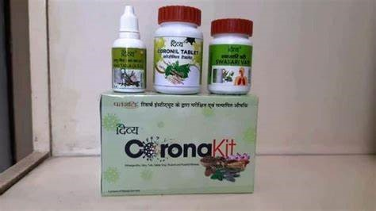
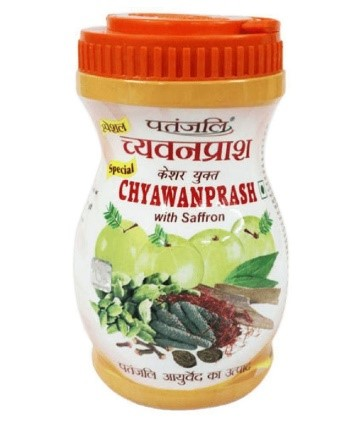

AYURVEDIC MEDICINES
Siddhayu Painquit I
PRICE - Rs.250
HELPS IN JOINT PAIN RELIEF (60 TABLETS)
ABOUT THIS ITEM
.> 5 IN 1 JOINT CARE FORMULA:Painquit tablet is a one-stop, natural, 5-fold therapy for bone and joints and helps support- Pain, Inflammation, Mobility, Flexibility and Strength
>KEEP ACTIVE: Our blend of standardized herbal extract aids in restoring flexibility of joints and promotes healthy response to pain and inflammation for a physically active lifestyle.
Himalya-Ashwgandha
PRICE - Rs.132
Helps in boosting Immunity (60 TABLETS)
Special Ingredients Pure
Herbs Dosage Form Tablet Brand
Himalaya Diet Type
Non Vegetarian Net Quantity 60 count
Patanjali Divya Coronil Kit
Price - Rs.530
Helps to treat cold, cough and other such diseases
• Coronil tablet helps to boost immunity
• Swasari Vati helps to treat cold, cough and other such diseases
• Anu Taila improves the workings of all sensory organs and helps to provide relief and relaxation
Patanjali Special Saffron Chyawanprash
Price - Rs. 280
Useful in common cold, helps improving the immunity (1KG pack)
Key Benefits
• Helps maintain a healthy appetite
• Effective in symptoms like lung disorder, nose and throat infection, and bronchial asthma
• Beneficial in memory loss and maintaining the overall health
• Useful in common cold